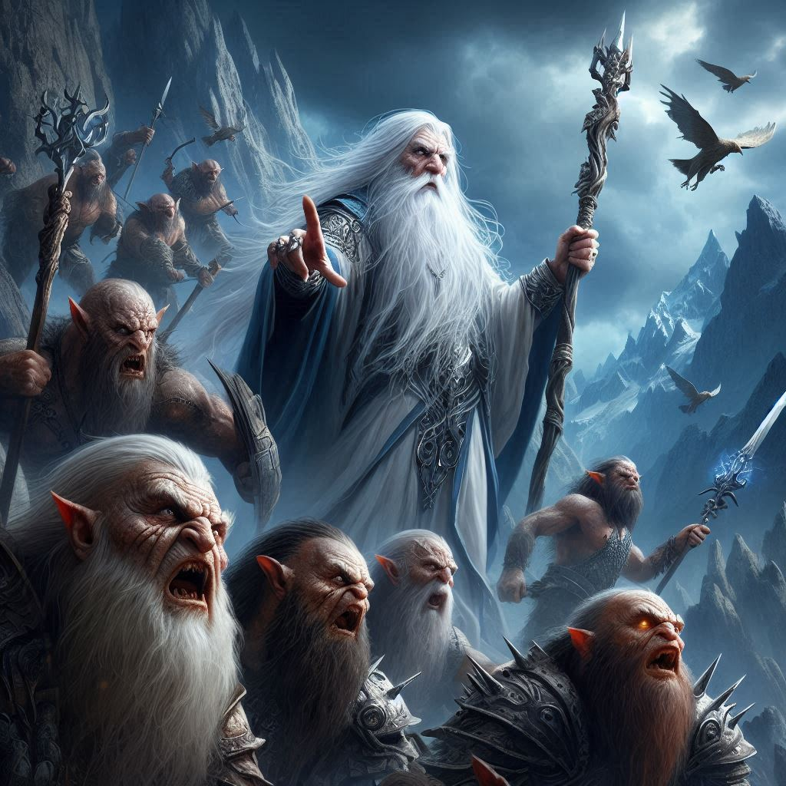

Saruman el Blanco

Saruman, cuyo nombre original era Curunír, era un Maia de Aulë, el vala de los artesanos. Era un ser de gran inteligencia y conocimiento, y poseía una voz persuasiva y un dominio de las artes mágicas. Antes de su caída, Saruman era un líder sabio y respetado, pero su orgullo y ambición lo llevaron a buscar un poder mayor. Corrompido por el Anillo Único, Saruman se volvió cada vez más arrogante y paranoico, y su apariencia física cambió con el tiempo, volviéndose más pálida y demacrada. Su vestimenta pasó de ser blanca, símbolo de pureza, a tonos más oscuros y siniestros. Obsesionado por forjar un nuevo orden bajo su dominio, Saruman traicionó a sus compañeros Istari y se convirtió en una sombra de lo que alguna vez fue